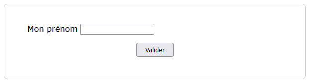
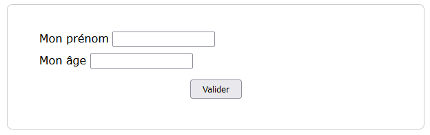
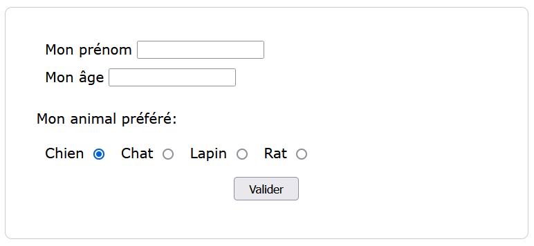

Exercices#
Exercice 1#
Créer le formulaire ci-dessous qui contient un champ de type
textet un bouton de validation:Ajouter au champ de saisie du prénom, les attributs suivants: - l’attribut
namequi a pour valeurprenom- l’attributidqui a pour valeurprenomAjouter au formulaire un champ de type
numberpour saisr un âge. On ajoutera aussi des attributsnameetid.Un formulaire peut contenir des boutons radios. L’ajout de ces boutons se fait avec des balises
<input>de typeradio. Chaqueinputa les attributs suivants:L’attribut
namequi a la même valeurpetpour chaque bouton radio.L’attribut
valuequi a la valeur correspondant au type d’animal à sélectionner.
De plus, le premier bouton radio contient la valeur
checkeddans sa baliseinput.
{kind=link}
{kind=link}
{kind=link}
Exercice 2#
On reprend le formulaire de l’activité pour cet exercice.
Une liste déroulante contient plusieurs valeurs et permet de faire un choix parmi les valeurs proposées. En html, la liste déroulante est implémentée par:
la balise
<select>et</select>qui contient l’attributnamepour nommer la liste;entre ces 2 balises, les balises
<option>et</option>contenant l’attributvalueassociée à chaque valeur de la liste.
On a donc un code qui ressemble à:
<select name='ma_liste'>
<option value='valeur 1'>Ma première valeur</option>
<option value='valeur 2'>Ma seconde valeur</option>
</select>
Vous trouverez une documentation plus complète sur le site de la fondation Mozilla à propos de la liste déroulante.
Vous devez compléter le formulaire avec une liste déroulante contenant 5 couleurs.
Exercice 3#
On reprend le formulaire de l’activité pour cet exercice.
Une zone de texte permet de saisir un message sur plusieurs lignes.
En html, une zone de texte est implémentée par:
la balise
<textarea>et</textarea>qui contient les attributsnamepour nommer la zone,rowsqui définit le nombre de ligne de la zone etcolsqui définit le nombre de colonnes de la zone de texte;entre ces 2 balises se trouve un exemple de texte (non obligatoire).
On a donc un code qui ressemble à:
<textarea name="message" rows="4" cols="40">Le message par défaut</textarea>
Vous trouverez une documentation plus complète sur le site de la fondation Mozilla à propos de la zone de texte.
Vous devez compléter le formulaire avec une zone de texte contenant de 4 lignes et 40 colonnes pour la saisie.
Exercice 4#
Il faut au préalable récupérer sur l’ENT l’archive formulaire.zip et la décompresser dans votre espace de travail. Le dossier est organisé pour utiliser le module Pyhon Flask qui permet d’avoir un serveur web nécessaire au traitement des données d’un formulaire.
Dans le dossier serveur_HTTP, faire un clic droit sur le fichier serveur.py puis ouvrir avec python. Si tout se passe correctement, la fenêtre de commande exécute le script et on a l’affichage suivant:

On peut se connecter au serveur web que l’on vient de lancer avec un navigateur en saisissant l’url localhost:5000/.
Le formulaire à créer a pour adresse localhost:5000/formulaire.
Éditer le fichier
formulaire.htmlplacé dans le dossiertemplates.Ajouter au formulaire l’attribut
actionqui a pour valeurlocalhost:5000/reponse.Ajouter au formulaire la méthode
getà votre formulaire puis valider celui-ci après l’avoir rempli. Que remarquez-vous au niveau de l’url ?Modifier la méthode d’envoi par
postpuis soumettre à nouveau le formulaire. Quelle est la différence avec l’envoi précédent ?